Goals
It's fair to ask, why another VATSIM client? The vice project started out of curiosity with an interest
in trying out some new ideas for how a client might work.
I asked myself "how hard could it be?", and as always seems to be the case, the answer to that question was "much harder
than it seemed at first."
Nevertheless, once you get far enough with something like this, your choice is to finish it or throw it away, incomplete.
Not wanting to the effort to go to waste, I went with finishing it.
A few further motivations became clear as I made progress. The first was cross-platform support: the ability to use VATSIM on non-Windows computers (both Macs and Linux) is of interest to many; vice was therefore written to be cross-platform from the start.
The next was that it be open source: the source code to vice is freely available; my hope is that it will see further improvements thanks to the contributions of additional developers.
In its current form, vice does not strive to replicate the experience of using a particular real-world ATC system.
Rather, its goal is to be general-purpose and to be suited to VATSIM's unique top-down control structure, where a controller may be simultaneously responsible for a range of positions.
An interesting future project would be to add modes that better replicate specific real-world systems; much of the core of vice's implementation could be reused for such an effort, making it easier to develop such support.
Credits
vice uses a number of open-source libraries in its implementation; see the credits file in the
source code distribution for details.
Thanks also to the font and audio designers whose freely-available work is used in vice; they, too, are listed in the credits file.
Finally, thanks to our AI overlord DALL-E 2, who created vice's icon given the prompt "air traffic control tower retro art deco".
vice is heavily influenced by Ross Carlson's VRC client for VATSIM; many features from VRC have been reimplemented in vice.
Thanks to Ross for many happy hours with VRC as well as the inspiration for those features.
Reporting Bugs
As a new client, vice will inevitably have bugs. If you have encountered one, apologies!
It would be of great help if you would send in a report if vice crashes when you're using it,
reports an error that it cannot recover from, or even if it is doing something that doesn't seem quite
right.
Bugs can be reported via email at bugs@vice.pharr.org. In your bug report, please include:
- A description of what you were doing and how vice responded. If what it's drawing on the
screen is garbled or otherwise incorrect, including a screenshot would be helpful, if you're able.
- Vice's log files from your controlling session; after you exit Vice, it will save a log
file for your session. On Windows, it's in your
AppData folder in Roaming/Vice/vice.log and on Mac, it's in Library/Application Support/Vice/vice.log. Attaching that file to a bug report will greatly help with fixing the issue. Note that this file is overwritten each time you quit vice, so be sure not restart vice before attaching it to a bug report and sending the email.
If you happen to have a github account, bugs can also be reported in the vice issue tracker there, but there is no need to make a github account to report a bug if you don't already have one.
Also, if you find any errors or omissions in this documentation, please email bugs@vice.pharr.org.
(Similarly, if you have a github account, there's the issue tracker for the website contents.
Sector and Position Files
vice reads the standard SCT2 sector files and POF position files, as used for example in VRC.
The first time you launch vice you will be presented with a message asking you to provide the locations of these files to vice.
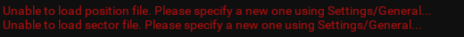
Select the "Settings/General..." menu item and do so and you will then be able to get started exploring vice.
Configs
One of the key concepts in vice is the Config.
A Config represents an organization of the vice window–the radar scopes that are available and their settings, and the additional tools that are present.
(In the next section, Subwindows, we will go into much detail about the items that can be placed in the vice window.)
One might typically have a separate config for each position that one controls–one for JFK_GND and another for JFK_TWR, for example.
The Config gives a convenient way to organize all of the vice settings that one might want to change when controlling different positions.
As an example, here is a config that's a reasonable one for JFK_TWR.
Most of the window is devoted to the tower's radar scope.
To the left is various information about the weather at JFK, the departures, arrivals, and the other online controllers.
Going across the bottom of the window, we have a radar scope for ground control, a place for entering commands with the keyboard, and a subwindow that shows the flight plan ofr the currently selected aircraft, JBU917.
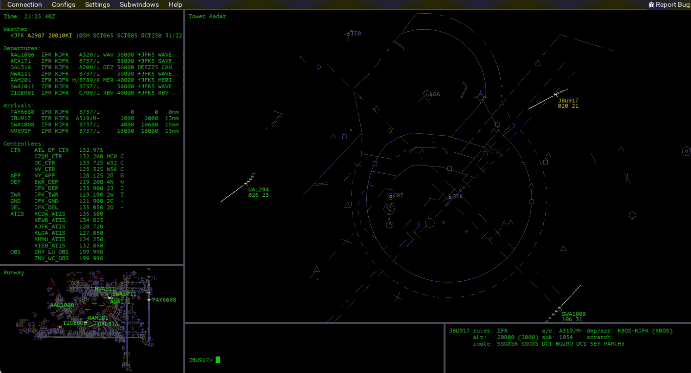
The top-level "Configs" menu makes it possible to create new Configs from scratch or by cloning existing ones.
Configs can also be renamed and deleted.
All of the available Configs are listed below the separator in the menu.
Switching between them is instantaneous and can be done using the menu.
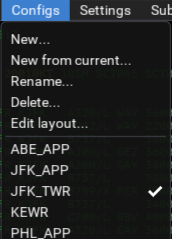
Subwindows
vice only opens a single window on the screen.
(You're encouraged to make it full-screen.)
That window is then split into subwindows, where each subwindow has a tool associated with it.
We saw this idea above, with the Config for controlling JFK_TWR that had two radar scopes, a command-line interface section, and various other information displayed on the screen.
With this approach, there's no need to worry about organizing multiple windows on your screen and having to deal with things being covered up when they overlap.
Every pixel in the vice window is associated with exactly one subwindow and thus, exactly one tool.
vice imposes very few restrictions about how you configure your subwindows.
If you were only doing clearance delivery, for example, you might not even have a radar scope visible but would instead just have flight plans and airport information available to you.
Or if you were using vice to watch live traffic for entertainment, you might not have a command-line interface subwindow since you have no aircraft under your control.
However, most of the time you will have at least one radar scope, the command-line interface, a flight plan subwindow and an airport information subwindow.
Select the "Subwindows" main menu item to configure the subwindows in your Config.
Each one will have an entry in the menu.
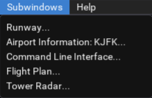
Editing the Layout
When you first launch vice, you will be presented with a default Config with a few commonly-used subwindows.
You can then edit that Config to your liking, or you can create a new Config from scratch.
Here we will walk through how one organizes a brand-new Config, though the same ideas apply to editing an existing one.
To start we have a window with a single radar scope.
It is showing video maps for KJFK, KLGA, and KEWR, which are all close to each other.
Let's assume we were responsible for all three airports and wanted a config where we could keep an eye on the ground at each of them.
We'd like to have three scopes along the left, one for each of the airports, and then a place to enter keyboard commands at the bottom.
We'll start by splitting up the window into subwindows.
Select the "Configs/Edit Layout..." menu item and a few controls appear at the top of the window.
We'll start by splitting the window in half horizontally.
After clicking the "Split Horizontally" button, we click in the main window to select it to be split.
Then we choose "Split Vertically" and click the main radar scope to make room at the bottom for the command line.
Two more selections of "Split Vertically", now splitting the left side of the window, make room for the per-airport scopes.
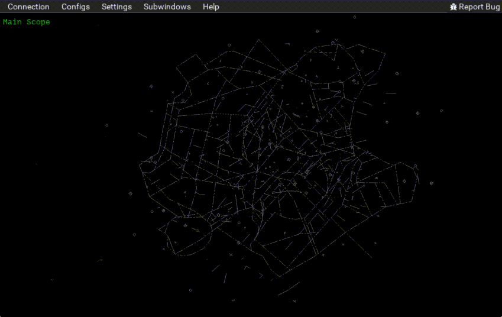
Next we'll adjust the sizes of the subwindows, giving the main scope most of the window area and giving the three airports
equal space on the left side.
Just place the mouse cursor over the gray lines at the subwindow boundaries, click the right mouse button, and drag to size them as you like.
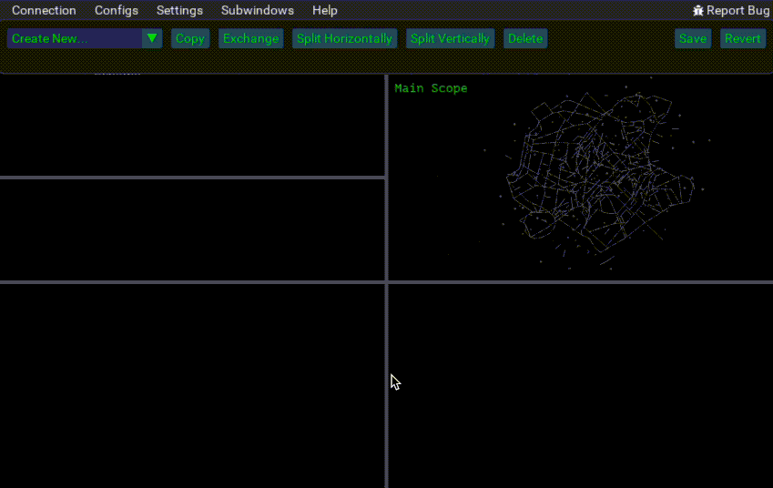
Now we have a bunch of empty subwindows.
The "Create new..." option lets us give each one a job.
After choosing a type of subwindow, we click on the region of the window where it should go.
We'll have the bottom right one take care of the command-line interface and then create new radar scopes for the three on the left.
All three start out with a default view.
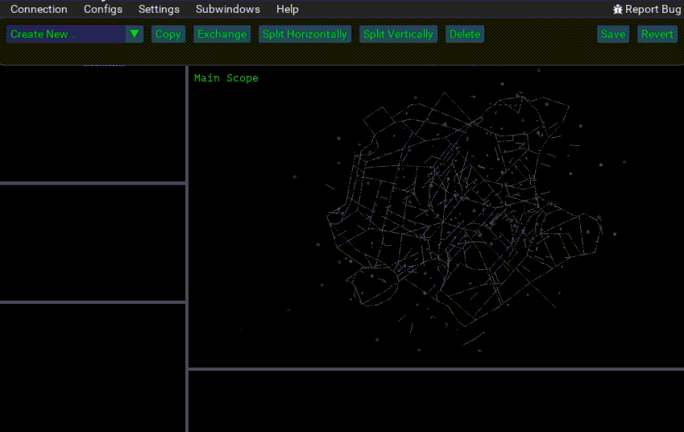
Finally the three new radar scopes need to be set up.
We'll just show KLGA here.
There's an entry in the "Subwindows" menu for each subwindow on the screen; selecting it brings up the subwindows configuration window.
We'll take one of the Unnamed ones.
First we give it a more descriptive name; you can see that the main window is updated to show the name we've entered.
Right clicking and dragging then lets us center the radar scope on the airport.
The mouse wheel lets us zoom in so it fits the subwindow.
It's a little busy with all of the taxiway and runway labels, so we'll go back to the KLGA configuration subwindow to turn those off.
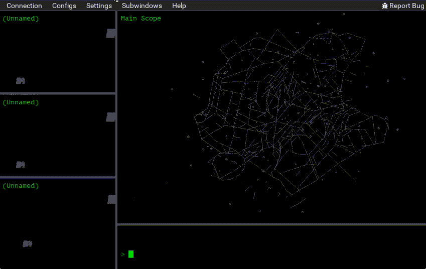
Organization
Even outside of the Config editor, it's easy to change the size of subwindows: just right-click on the lines that separate them and drag them.
In this way you can fine-tune the size of your subwindows to achieve a layout that works for you.
It's also possible to select a subwindow to temporarily take over the entire vice window.
Hover your mouse over the subwindow you'd like to enlarge and hit control-f.
When you're ready to go back to the original view, hit control-f again.
This feature makes it possible to have very small radar scopes when doing top-down control on VATSIM, like the ground radar in the earlier JFK_TWR example.
Sometimes you may be able to do ground control from the small subwindow, but if you need a closer view, one is easily at hand.
Here's an example:
Radar Scopes
Radar scopes are at the heart of any virtual ATC client, vice included.
A radar scope must clearly show important information to the controller, accurately rendered, while not distracting them with unnecessary information.
What is important and what is not depends both on the position being controlled and the individual controller, so vice offers a highly-configurable radar scope so that each user can set their radar scopes up it in the way that is most useful to them.
Using the Mouse
The mouse can be used to do a number of things in a radar scope.
Left clicking on an aircraft's track or datablock selects it, and left-clicking away from any aircraft deselects the currently-selected aircraft.
The flight plan of the currently-selected aircraft is displayed in the flight plan subwindow.
The currently-selected aircraft is also extensively used by commands in vice's command-line interface.
Left clicking and dragging a datablock repositions it.
Double-left-clicking and dragging from one point to another shows an indicator that gives both the distance between the two points in nm as well as the heading and reciprocal heading between them.
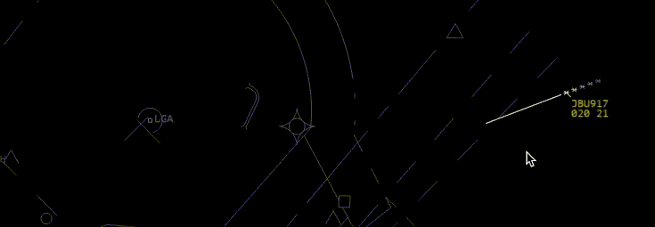
Right-clicking and dragging adjusts the position of the scope and the scroll wheel can be used to zoom in and out.
Settings
The settings window for radar scopes offers numerous configurable options.
When first opened, most of them are hidden under subheadings.
Of the visible ones, the first allows the scope's name can be specified.
The scope name is shown in its upper-left corner and is used to distinguish between scopes in the "Subwindows" menu.
A range of altitudes can be specified as well.
Any aircraft outside of this range are not shown on the scope.
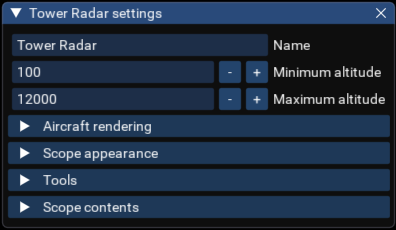
The first subheading offers options for configuring how aircraft are shown.
A number of data block formats are available, with varying amount of information available.
The current selections, "none", "simple", "ground", "tower", and "full" generally correspond to the data block formats offered by VRC.
If "Vector lines" is selected, the user can configure the length of a vector line in front of aircraft.
It may be specified either as a fixed number of nautical miles or as the estimated distance the aircraft will travel in the specified number of minutes.
Finally, there is an experimental feature, "Automatic datablock layout", which tries to move overlapping datablocks so that they no longer overlap.
When it works, it a handy feature, though it is still a work in progress; it causes data blocks to jump all over the place when there are too many of them.
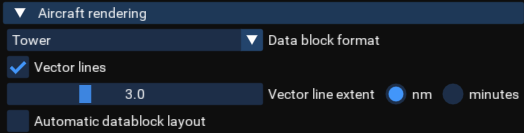
The next subheading makes it possible to control the appearance of the radar scope.
Fonts and line widths can be set, and the scope can be rotated; this can be especially useful for ground control where having North exactly up may be less important than reducing the space the airport takes on the radar scope by rotating it accordingly.
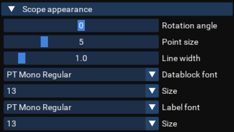
The third subheading, Tools, offers a number of useful tools to enable in radar scopes.
Each of these will be discussed in more detail shortly.
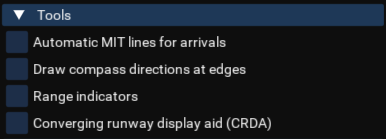
Finally, the Scope Contents heading allows control over drawing all of the objects that are defined in the sector file.
In addition to all of the fixed types of objects–VORs, airways, etc.–it also allows selecting objects like video
maps and airspace outlines that are defined in the sector file.
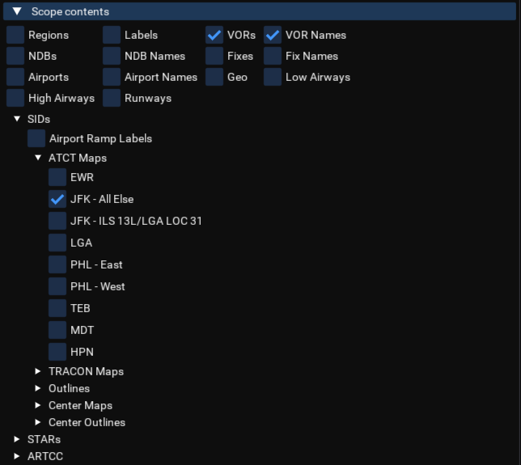
Compass Directions
Selecting "Draw compass directions at edges" is selected in the "Tools" subheading causes a compass to be drawn on the scope.
If no aircraft is selected, the directions are with respect to the center of the scope, but if an aircraft is selected,
they are with respect to the aircraft's position, as shown in the example below.
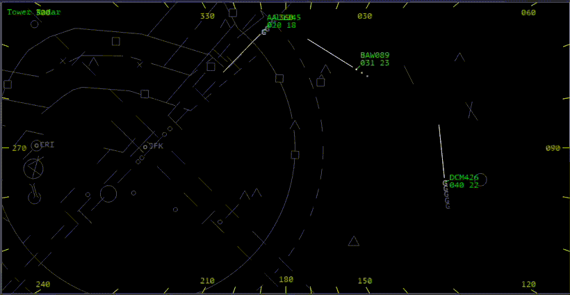
Range Indicators
If the "Range indicators" option is selected, a number of additional sliders and buttons appear.
It is possible to configure the radar scope to both issue early warnings at a greater distance and to
issue alerts when a violation occurs.
The criteria for these can each be set individually for pairs of IFR/IFR aircraft, IFR/VFR, and VFR/VFR, depending on the
airspace being controlled.
Furthermore, situations between aircraft can be shown both with classic range rings as well as with a line between them, depending on the controller's preference.
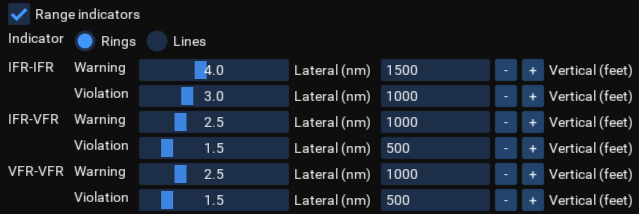
Here is a demonstration of the range indicators, courtesy of a misbehaving aircraft during an event.
Circles are used at first and then the settings are changed to use a line.
The line shows both the distance between the aircraft in nm as well as their altitude difference in hundreds of feet.
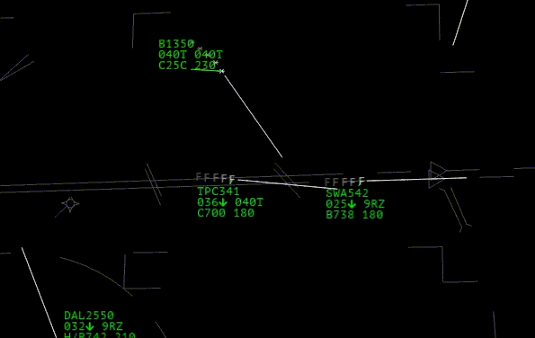
The Miles in Trail List
The radar scope can also show the miles in trail (MIT) between aircraft in an approach sequence.
The sequence can specified directly using the mit command.
Alternatively, vice has an experimental feature where it tries to infer the landing sequence based on the positions of
aircraft arriving at an airport and draw MIT indicators automatically.
This feature is enabled with the "Automatic MIT lines for arrivals" option in the "Tools" submenu of the radar settings window.
Here is an example, with the arrival sequence SKY1548, B1350, SWA542, and DAL26550.
For each pair, both their current distance and their predicted distance 30 seconds in the future are reported.
The predicted distance accounts for the respective speeds and headings of both aircraft.
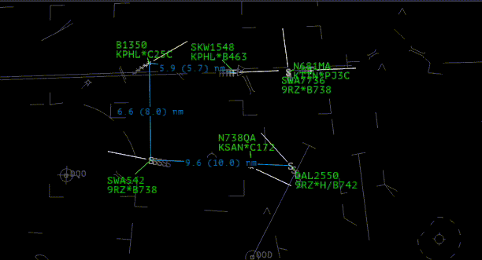
Converging Runway Display Aid
The Converging Runway Display Aid tool draws "ghost" aircraft in the arrival sequence of converging runways,
so that a controller can sequence the two runways properly.
It is based on a tool in the real-world STARS system, which is also replicated in vSTARS.
If this option is selected in the radar scope settings, many additional controls appear.
First, it is necessary to specify the airport of interest so that vice can determine its runways.
Next, a primary and secondary runway are specified, indicating the two converging runways in use.
By default, the ghost aircraft are drawn in the secondary runway's sequence, though an option allows having them in the primary runway's.
The "stagger" mode draws the ghost the same distance from the intersection point of the two runways along the secondary
approach, while "tie" offsets the aircraft by a specified distance.
With "stagger" mode, one sequences as if the ghost was where it appears, while with "tie", one attempts to have aircraft on the secondary approach overlap the ghost aircraft.
A number of additional options control how vice decides if an aircraft is on approach for the primary runway.
Hopefully, they can be left alone.
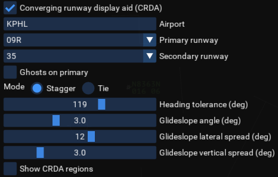
Here is vice's CRDA feature in action using real-world traffic at KPHL.
(See below for information about how to use real-world air traffic in vice.)
We have FFT1462 on final approach for runway 9R while EJA730 is on final for runway 35.
Runway 9R has been designated the primary runway, so the secondary runway, 35, has a ghost of FFT1462 in the sequence.
Ghost aircraft have their callsigns drawn in a different color and do not cause range indicator warnings.
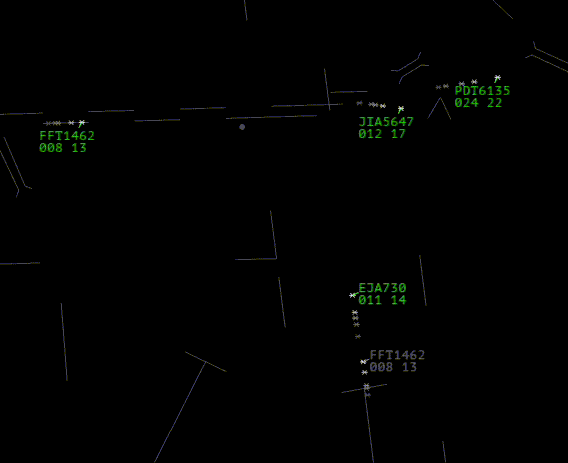
In this case, the spacing seems a bit tight, so we'll assume tower-visual separation is being applied.
Command-Line Interface
An instance of the command-line interface subwindow must be part of a Config for the user to be able to enter
keyboard commands.
It has no settings beyond the selection of a font and font size to use for it.
This subwindow is unusual in that only one instance of it can be created in a Config; it doesn't make sense to have more than one available, since both would receive the same input from the user.
Airport Information
The Airport Information subwindow can be used to display a variety of information about one or more airports.
Which airports are included in an Airport Information subwindow can be entered in its settings window.
Thus, if you're controlling multiple airports, you might have all of them represented in a single Aircraft Information subwindow,
or you might have multiple subwindows, one for each airport.
Here is an example of its contents:
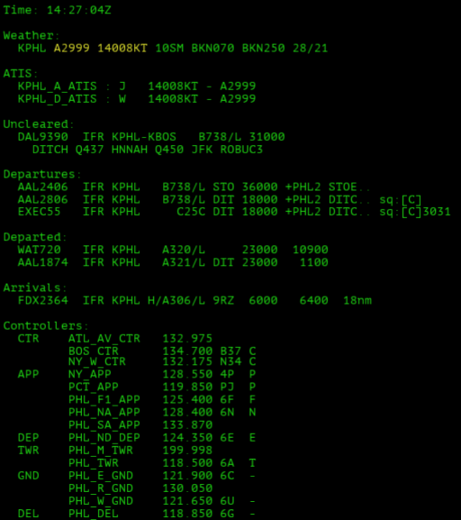
There's a lot of text there, but what is there is carefully selected and is organized to be easily accessible by the controller.
Not all of these things need to be displayed; which of them are there can be configured via the Airport Information subwindow's settings window.
Thus, if you're a tower controller and someone else is doing clearance delivery, you might not include information
about the uncleared aircraft.
At the top is the current time and the METAR and ATIS for the selected airport or airports.
The altimeter and winds are highlighted, for ease of finding them quickly.
Aircraft that have not yet received their clearance are shown next.
Basic information about each one's flight plan is shown in the display, including the flight rules, departure and arrival airports,
aircraft type, and cruising altitude.
The second line shows the aircraft's filed route.
This way, it's easy to quickly see if a flight plan has problems when a pilot first connects.
("Uncleared" is currently determined using the heuristic that aircraft without assigned squawk codes are assumed to be uncleared.)
Aircraft that have been cleared but have not yet departed are listed under "Departures".
The information included is tailored to the needs of ground and tower controllers.
From left to right are the callsign, flight rules, departure airport, aircraft type, scratchpad, cleared altitude, and the start of their route.
In the above example, the last two aircraft have a "sq:[C]" indicator, which indicates that they are not yet squawking mode Charlie.
The last one is not yet squawking its assigned code, which is shown as well.
Aircraft that have left the airport and are in the air are shown under "Departed".
Their first six fields match the order of the fields for departures and the last one shows the aircraft's current altitude.
We can see that the first aircraft has an empty scratchpad while the second has "DIT" in its scratchpad.
Next are arrivals.
Again the information shown follows the same basic order.
If a temporary altitude has been set, it is shown in place of the cruising altitude—here we have FDX2364 with a temporary altitude of 6,000 feet.
Arrivals also have their distance to the airport shown.
When there are multiple arrivals, they are not sorted strictly by their distance to the airport; an aircraft 10,000 feet directly above the field may be assumed to be arriving later than one 6nm away at 2,000 feet.
The sorting of arrivals attempts to display them in the order in which they will reach the airport, given these considerations.
Finally, the active controllers are listed. In addition to the positions and radio frequencies, the sector id is displayed for each position if it is available.
Furthermore, the character used to identify aircraft tracked by the controller on radar scopes is shown, again if it is known.
Flight Plan
There's not much to say about the flight plan subwindow, though it's an invaluable tool; it shows the flight plan for whichever aircraft is currently selected.
(See further discussion of selecting aircraft for more information on aircraft selection.)
The flight plan can't be edited in the flight plan subwindow; that is handled using vice's command-line interface, which offers a
number of commands for clearance delivery.
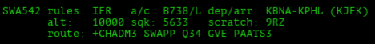
Reminders
The Reminders subwindow shows todo items and timers that have been added via the vice command-line interface;
see that documentation for information about the relevant commands.
For timers, the time until the timer expires is shown.
Both timers and todo items can be removed from the Reminders subwindow just by clicking on them.
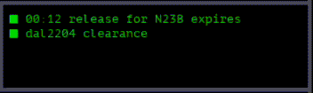
Notes Viewer
The notes viewer subwindow can be used to display text notes written using the Notes Editor.
One or more notes can be selected in the Notes Viewer settings and then each note can be individually selected.
Notes can be reordered by dragging entries in the list of notes.
In the example below, the Notes Viewer is displaying the missed approach headings and altitudes for the KJFK runways as well as the takeoff headings for runway 13 in the non-13L ILS configuration.
From its configuration dialog box on the right, we can see that the headings for runway 13 with 13L ILS are at hand but are not displayed; in this way it's possible to have a number of possibly-relevant quickly available but not necessarily dispayed.
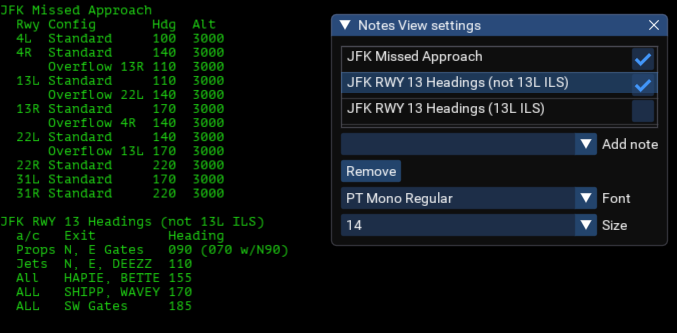
In addition to displaying multiple notes in a single Notes Viewer, it can also be useful to have multiple Notes Viewer subwindows, each displaying different information.
Colors
There are currently two color schemes—dark and light—built-in to vice. More will be available in the future.
To switch between them, choose the "Settings/General..." menu item and then select the desired color scheme.
It is also easy to edit the colors in the selected color scheme; choose the "Settings/Colors..." menu item and the color editor will appear, showing all of the colors in the current color scheme.
As you edit colors in the color editor, the changes are reflected immediately in the user interface; this makes it easy to dial in the colors as you like them.
Sounds
It is possible to configure vice to play sounds when various notable things happen. Choose the "Settings/Sounds..." menu item and the following dialog box will appear:
Sound effects can be selected for all of the indicated events and also be enabled and disabled globally.
Nearly twenty sounds are currently available.
(Note that it is not currently possible to provide your own sound files.)
Writing and Editing Notes
Text notes for the Notes Viewer subwindow can be entered by choosing the "Settings/Notes..." menu item.
Doing so brings up a small notes editor that allows adding new notes and editing or deleting existing notes.
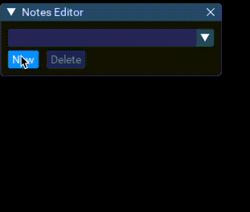
Selecting Aircraft
A key concept for working with the CLI is the currently-selected aircraft.
Clicking on an aircraft's track or datablock in a radar scope selects it, and entering an aircraft's callsign in the CLI causes it to become the currently-selected aircraft.
The currently-selected aircraft is indicated with a distinct color for its datablock in radar scopes and by its callsign being shown in the CLI prompt. For example, AAL1575 is the selected aircraft below:
For all of the commands that operate on aircraft, the currently-selected aircraft is used by default, unless another aircraft is specified explicitly.
The currently-selected aircraft can be changed simply by selecting another aircraft.
Alternatively, the currently-selected aircraft can be cleared either by clicking on a radar scope away from any aircraft or by pressing the "escape" key.
Another way to specify aircraft for commands is to start entering a command and then click on an aircraft in a radar scope.
That aircraft's callsign will be automatically added to the command being entered.
In order to make it easier to select aircraft using the command-line, vice allows entering a partial callsign.
If the given callsign is unambiguous, then the corresponding aircraft is selected, but if multiple aircraft match, an error is issued.
In the example below, the "SWA" callsign alone is insufficient, but typing "SWA2" and hitting enter is enough to select SWA2783.
In this case, the aircraft might alternatively have been selected by entering a partial callsign like "783".
Note also that it is not necessarily to capitalize the letters in callsigns.
If you have entered a partial callsign, pressing the "tab" key will cause vice to attempt to replace your text with the full callsign.
However, if multiple callsigns match, it will print a message below the text entry field, showing the matches.
Seeing the options in that way makes it easy to see how to make the callsign unambiguous.
In the sample below, hitting tab after typing "AAL1" is insufficient to select the desired aircraft but after seeing the error message, we see that adding a "6" to make "AAL16" and then typing tab works to select AAL1610.
Clearance Delivery
Reminder
Remember that vice does not connect to VATSIM. Thus, although doing things like changing the cleared altitude of an aircraft
causes the reported altitude clearance in the flight plan window to change, it has no actual effect.
A variety of commands are available for clearance delivery when using vice's command-line interface.
Some change individual aspects of an aircraft's flight plan and others provide information that is useful
when clearing an aircraft.
It is a good idea to have a Flight Plan subwindow visible as part of your Config so that you can easily check an aircraft's current flight plan and see the effect of changes you make to it as you are clearing it.
The following commands modify components of a flight plan:
| Command |
Function |
Example |
actype callsign type |
Sets the aircraft type, including its equipment suffix. |
actype ual955 B772/G |
alt callsign altitude |
Sets the aircraft's cruising altitude. |
alt BAW60T 31000 |
arr callsign airport |
Sets an aircraft's arrival airport. |
arr ezy68WZ lgw |
dep callsign airport |
Sets an aircraft's departure airport suffix. |
actype EZY68WZ CFU |
equip callsign suffix |
Sets aircraft's equipment suffix. |
equip TRA9008 G |
ifr callsign |
Marks the aircraft as an IFR flight. |
ifr klm1602 |
vfr callsign |
Marks the aircraft as a VFR flight. |
vfr n205bw |
scratchpad callsign value |
Sets the aircraft's scratchpad. If no entry is specified, the scratchpad is cleared. |
scratchpad AFR17LF I9R |
squawk callsign code |
Sets the aircraft's squawk code. If the aircraft is IFR and no value is specified, then a squawk code is automatically assigned. |
squawk AAL622 |
route callsign route |
Specifies the aircraft's entire route. |
route JIA5620 +JFK5 MERIT ROBUC3 |
All of these commands use the currently-selected aircraft, if there is one.
For example, if UAL955 is selected, then its type can be set simply by typing actype B772/G;
there is no need to specify the callsign.
The altitude specified with the alt command may either be a full altitude, or may be a three digit altitude, in which case it is interpreted as being hundreds of feet. Thus, either "31000" and "310" could be provided to specify FL310.
If only a minor modification to the route is necessary, then it's undesirable to have to reenter all of it using the route command.
For such cases, the editroute command is available.
It loads the specified aircraft's route into the command-line input, ready to be directly edited.
After you correct it, hitting enter causes the route command to be executed.
| Command |
Function |
Example |
editroute callsign |
Prepopulate the command-line entry with a route command for modifying the aircraft's currently-filed route. |
editroute UAL955 |
An example of its use is below. After editroute aal284 is entered, the route command is automatically generated and the cursor is positioned at the start of the current route, making it easy to make changes.
vice has its own copy of the US FAA's preferred route database (PRD).
The faaprd command can be used to look up the routes in the database for
an aircraft's departure and arrival airport:
(For ZNY controllers, there is a nyprd command that looks up routes in the ZNY PRD.)
| Command |
Function |
Example |
faaprd callsign |
Print any routes for the aircraft from the FAA preferred route database. |
faaprd UAL955 |
nyprd callsign |
Print any routes for the aircraft from the ZNY preferred route database. |
nyprd DDX2 |
Note
The databases currently available in vice are admittedly US-centric (though it does include a database of international airports).
We'd be happy to extend it to have a wider range of data sources, given information about where to find them!
Tracking and Handoffs
Another group of commands takes care of actions that are performed for aircraft that are in flight.
| Command |
Function |
Example |
accept callsign |
Accept the handoff of the aircraft. |
accept BAW1 |
drop callsign |
Drops the track on the specified aircraft. |
drop FDX265 |
handoff callsign controller |
Initiates a handoff of the aircraft to the specified controller. |
handoff UPS22 JFK_APP |
pointout callsign controller |
Points the aircraft out to the specified controller. |
pointout JIA2703 6e |
reject callsign |
Rejects the handoff of the aircraft from another controller. |
reject DAL144 |
tempalt callsign altitude |
Specifies a temporary altitude for the aircraft. |
tempalt RYR1402 80 |
track callsign |
Initiates a track for the specified aircraft. |
track EXEC55 |
As with earlier commands, if there is a currently-selected aircraft, then the callsign need not be specified.
Further, as before, aircraft callsigns may be abbreviated when the abbreviation is unambiguous.
Finally, as with the alt command, the altitude specified with tempalt may either be in feet or in hundreds of feet.
For the commands that take a controller, the controller may either be specified via a callsign (e.g., JFK_APP), or using the identifier for the position (e.g., 6e).
Finally, a number of the commands from the Clearance Delivery section are useful for
enroute controlling—squawk and scratchpad especially, though the others are also useful for pop-up clearances.
Flightradar24 (Basic)
Selecting "Flight Radar" establishes a direct connect with Flightradar; vice will display traffic in a 50nm radius from the center of the radar scope.
Note that only limited information is available for each aircraft—just the callsign, altitude, and ground speed.
No further information (e.g., the squawk code, departure and arrival airports, or flight plan) is available.
The main advantage of this option is that it is a simple way to fill the scopes with realistic air traffic.
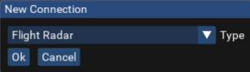
Flightradar24 (vrclivetraffic)
A better option for viewing live traffic is to use vrclivetraffic, which draws from multiple data sources to provide more complete information for each aircraft.
To use vrclivetraffic with vice, install vrclivetraffic as usual, edit its config.json as necessary to inform it which airport you are interested in, and launch it.
Once vrclivetraffic is running, select the "VATSIM (not actually)" option in the "New connection" dialog box:
Leave the address field unchanged and click "Ok". After a few seconds, traffic should start to appear in the radar scope.
Recorded VATSIM Sessions
The most complete option is to record the network traffic a VATSIM session when using another client (e.g., VRC).
That recorded traffic can then be replayed in vice, which makes it possible to see how that session would have appeared in vice.
Do the following to prepare to record VATSIM sessions for vice:
- Install the vsniff utility from its releases page; binaries for both Windows and OSX are available.
- If you're using VRC, open or create the file
myservers.txt in Documents/VRC. Add a line to the file containing: 127.0.0.1 vsniff.
- For Euroscope, open or create the file
myipaddr.txt in Documents/Euroscope. Add a line to the file containing 127.0.0.1 vsniff.
Then, each time you want to record a controlling session, do the following:
- Launch vsniff.
- Choose "vsniff" as your server when you establish a connection in VRC/Euroscope.
- Control as usual. As your session progresses, a file named along the lines of
2022-09-15@121005.vess will be written storing the network traffic. (The filename encodes the date and time at which the session began.)
To replay a recorded session file in vice, choose the "VATSIM Replay" connection type. You will be prompted to locate a VATSIM session file. After doing so, you will be offered the opportunity to speed up or slow down the rate at which the session is replayed and to select an offset into the session in seconds.
The experience with recorded VATSIM sessions is fairly complete, including full flight plans, the tracking of aircraft by controllers, and the controller chat from the session.